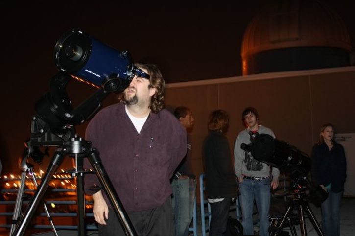
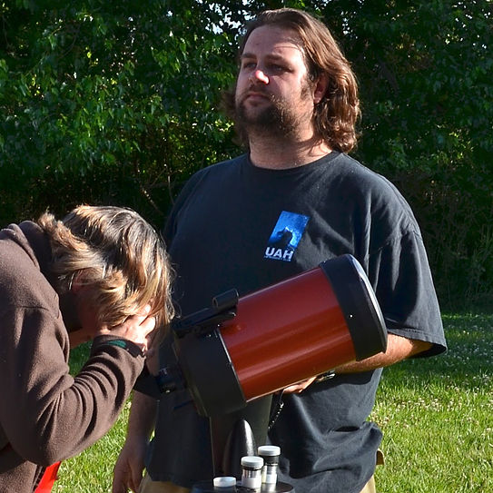

Astronomy
I have always been interested in astronomy. When I was a kid, I used to
go out with a small telescope and spend all night looking through it at
random planets and stars without really knowing what I was doing. While
attending UAH, a few friends and I decided to start an astronomy club.
During this time, I learned a ton about amateur astronomy as the vice
president and eventually president of the UAH Astronomy Club. At the same
time, I was studying astrophysics in my classes and preparing to start my
PhD in astrophysics at Georgia Tech. The picture below is from one of our
meetings where we had a huge turn out to observe a passing comet.

In grad school, I attended a summer school to learn more about analyses
using the data from the Fermi Space Telescope. During that time, there
was a transit of Venus across the Sun where I used my experience from the
UAH Astronomy Club to help others observe the transit.

Astronomy remains an inspirational force in my life. I still love going
out at setting up my telescope and observing various galaxies, nebulae,
and planets. One future goal I have is observe all of the Messier
Objects.